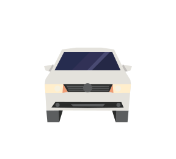
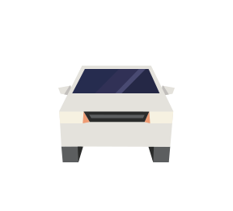
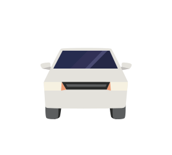
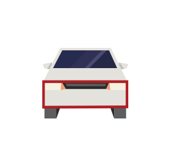
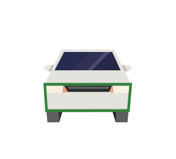
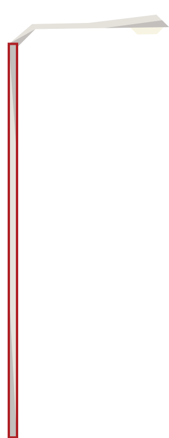
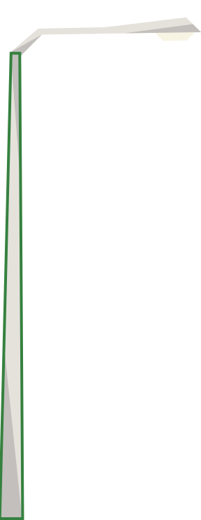
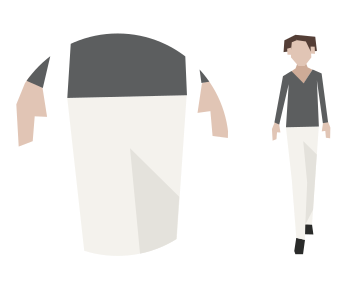
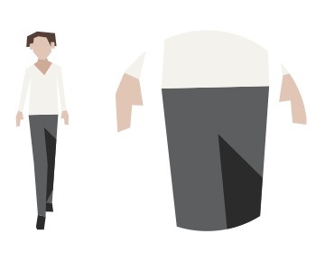

Attention
(August 2021) Streetmix documentation has now moved! Please update your bookmarks to https://docs.streetmix.net/.
Illustrations¶
If you would like to contribute illustrations, or have feedback on existing illustrations, please talk to us on Discord or on the forums!
We collect illustration inspiration and reference material on Pinterest. Give it a look!
Design principles¶
Streetmix illustrations use the following principles to achieve its simple, unique style.
Simplified forms and reduced details¶
The complexity of form is reduced to a simple silhouette and each object contains minimal details. Good rule of thumb: if you don’t need a particular detail to identify the item, don’t add it. This reduction helps each illustration scale to small sizes.
|  |  |
Nope. The extra details aren’t
visible at a small scale and the more
complicated silhouette makes the car look
clunky.
|
Yes! This silhouette has less
vertices, and extraneous details are
removed or simplified.
|
Sharp angles¶
All of the illustrations are comprised of sharp angles, with a minimal use of perfect circles.
|  |  |
Nope. Don’t draw rounded corners
or bulby shapes.
|
Yes! Edges should meet at sharp
angles.
|
Few orthogonal lines¶
There are very few entirely straight vertical lines. All of the objects slant in or out in a trapezoidal way, unless it makes the illustration look too funky.
|  |  |
Nope. Avoid rectangular shapes.
|
Yes! Shapes should be trapezoidal.
|
|  |  |
Nope.
|
Yes!
|
Lines that appear to be exactly vertical or horizontal will not actually be precisely level or plumb. This isn’t an engineering drawing. Lines can be slightly “off,” with some exceptions.
One example of such an exception is for building walls. Since buildings can be multi-story, lines that continue from one floor to the next must be vertically straight so that each floor aligns properly.
Recurring elements¶
Shapes that recur throughout illustrations helps everything read as part of the same unified family. However, these should be subtle—don’t overdo these, or force them into existence. Use them when they make sense.
45-degree angles¶
Some angled elements can be drawn at exactly 45 degrees. These work well for window reflections and shadows.
The “brick”¶
This is a simple trapezoidal shape of similar size and proportion that can be used as a small object, detail, or addition to a larger shape.
The “platter”¶
Similar to the Brick, the Platter is a trapezoidal shape but much longer and flatter.
Letters and words¶
Avoid using actual words or letters in illustrations. Streetmix is used all over the world, and we want to avoid making illustrations that are English-only (or specific to your preferred language).
One notable exception to this is the use of numbers or letters as transportation route identifiers.
Brands, logos, and other recognizable features¶
Similarly, avoid specific brands and logos, whether that’s commercial businesses (like transportation network companies or chain restaurants) or public agencies (like transportation agencies). However, some illustrations are clearly homages to actual elements that come from specific parts of the world, like New York City’s wayfinding pylons, or San Francisco’s deep-red “Yerba Buena” parklet. We like that these recognizable elements can be dropped anywhere around the world, but logos tie the elements to its regional source too strongly.
In the future…
…we may be able to relax these guidelines by localizing illustrations to specific regions. For now, prefer abstractions that make an illustration look generic, even if it’s an homage to a real place.
Color¶
Palette¶
Colors are mostly soft, with hints of brightness. They should have sufficient contrast against a light–medium blue background (the sky).
Colors are not necessarily “true to life.” (For instance, we’re not using the “actual” color of a taillight.) Use colors from the following color palette whenever possible, instead of using custom colors, so that illustrations appear unified. But if the palette just doesn’t work, you may choose a new color that does. Some illustrations may have already chosen a color not shown below, so it’s best to sample colors that have already been used elsewhere, even if it’s not part of the official palette.
Skin tones¶
#553f37
#72594b
#aa8b7e
#ceac98
#e1c5b5
To keep people recognizable, use skin tone colors only for people.
Beiges¶
#cead80
#e0cea8
#ecdbb1
#f6f1e1
Recommended for: walls, stucco, plaster, pavement, sand
Off-whites¶
#d8d3cb
#e7e6de
#f5f3e9
Recommended for: walls, metal, concrete
Greens¶
#35813f
#679a45
#89ba6a
Recommended for: foliage, trees, plants
Browns¶
#352d27
#645849
#7c705a
#988a74
Recommended for: wood, dirt
Grayscale¶
#2a2b2a
#5c5e5f
#c1bebb
#e4e2dc
#f4f2ed
Recommended for: asphalt, metal, road markings
Indigos¶
#252947
#313156
#494a72
Recommend for: windows, reflective surfaces
Blues¶
#234c6b
#366387
#4f83a3
Recommended for: water
Reds / Oranges¶
#720e1a
#ae2025
#ef9c74
#ffeecc
Recommended for: lights, flowers
Brights¶
#e7673c
#f8bb1c
#fcd157
#109ba8
Bright colors used sparingly when colors above won’t do.
Tip
You can download a palette swatch for use in your favorite graphics editing program.
- Adobe Swatch Exchange (ASE) format can be used in Adobe Illustrator or Affinity Designer.
- GIMP GPL format can be used in open-source image editing applications such as GIMP, Krita, or Inkscape.
Shadows and highlights¶
Many elements have one solid color with a highlight and a low light. Exceptions include objects with more details, like the bus. Because the bus contains detail elements (lights, windshield, mirrors, route number, etc), adding shading to the metal would make the object too busy. Similarly, details don’t need shadows or highlights—they wouldn’t be visible at a small scale anyway. All of the shading should be done with one solid color, without feathered shadows or gradients. (The only exception is the sky.)
Nope. The image is over–complicated
by the number of shadows and highlights.
|
Yes! The shading and highlighting is
used only on the most prominent element,
the windshield.
|
Nope. This image uses gradients to
blend out the shadows and highlights.
|
Yes! No gradients. No drop shadows.
|
Contrast¶
Some illustrations are smaller in nature, so they require more contrast between adjacent colors to be clearer. For example, the pedestrian’s pants need more contrast than the building.
|  |  |
Nope. This looks good as a larger
image, but the shadow is not really
visible when scaled down.
|
Yes! This actually looks like too
much contrast close up, but is just right
when scaled down.
|
Workflow¶
For instructions on how to work on illustrations, see the instructions in the illustrations repository: https://github.com/streetmix/illustrations
Tip
The illustrations used here in this documentation are also located in the illustrations repository! If you want to update the graphics used here, please make sure to process the exported SVG files through SVGOMG so that they’re optimized, making them faster to load.
You can also see a collection of illustrations in our Reference library.